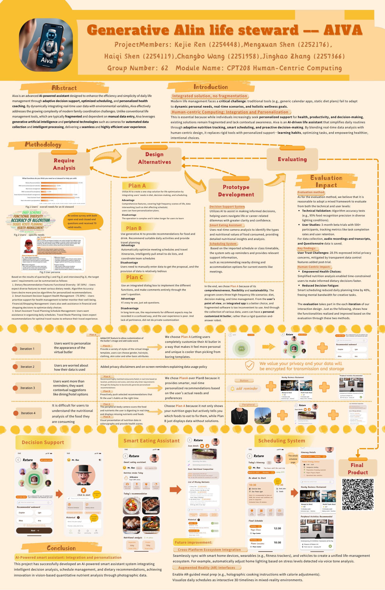

← Back to projectsCPT208 · Human-Centric Computing · Collaborative coursework
AIVA — AI Life Steward
An integrated AI assistant design concept for scheduling, nutrition guidance and contextual decision support. The project progressed from collaborative research and poster design to my individual presentation and reflective portfolio.
01 · Team project poster
Our group's original poster introduces the user problem, requirements analysis, design alternatives, system concept and prototype. This is the shared coursework foundation.

Download original team poster PDF02 · My individual development and reflection
Building on the team concept, I documented prototype design, Figma UI work, user flow, iterative feedback and evaluation. My stated contributions include Figma page production and the poster's overall visual framework.
Building on the group concept, I developed the individual presentation and design report, refining the interface, personalisation features and key user journeys.
Download original 16-slide PowerPointDownload individual portfolio report PDF03 · Individual presentation video
A walkthrough of the individual design process, user flows and interface refinements.
Download presentation videoDesign process and my contribution
Requirement research (70 valid questionnaires documented by the group), user persona, feature alternatives, low-fidelity wireframes, Figma screen design and six iterative refinements. The proposed app covers diet assistance, personalized decisions and schedules. These are prototype concepts, not verified production features.